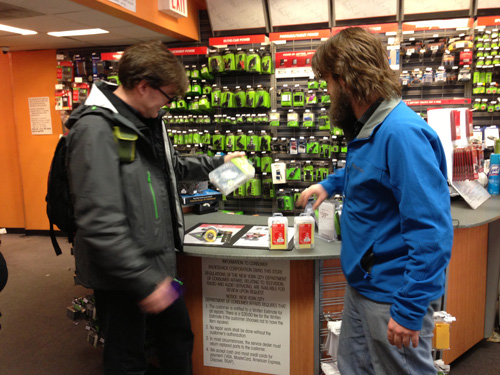
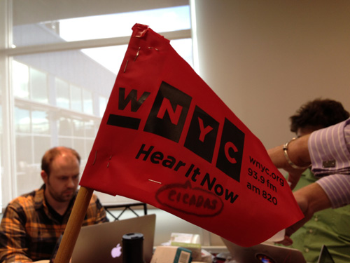

Building the DIY Kit
-

The Brood II bot kit listens for cicada sounds, tests the soil temperature, then sends the data to WNYC.
-
Parts
Here are the parts you need to start building your kit:
- Arduino Uno
- Thermistor
- Microphone
- Wire wrapping tool
- Electrical tape
- Pole/stick/stake
-

First, go shop for materials at a store like the venerable Radioshack.
-

Most of them have geek sections that carry Arduino kits and support kits.
-
Put together your kit with care...
-
... especially when wrapping wires.
-
The thermistor is the part that tells the temperature of the soil.
-
You can test it by putting it on some ice.
-
Then, do lots of programming of the Arduino. Save your work!
-
Test the mic after you program the Arduino to tell a cicada from Lady Gaga.
-
Be sure to hook it up correctly.
-

Use a visible marker to mark the spot of your Brood II bot.
-
To plant your bot, first attach the thermistor to the end of the stake.
-
After it's secured with electrical tape, cover it with a latex glove.
-
Tape it up nice. Use a piece of colored tape to indicate the 8 inches you'll plant the stake.